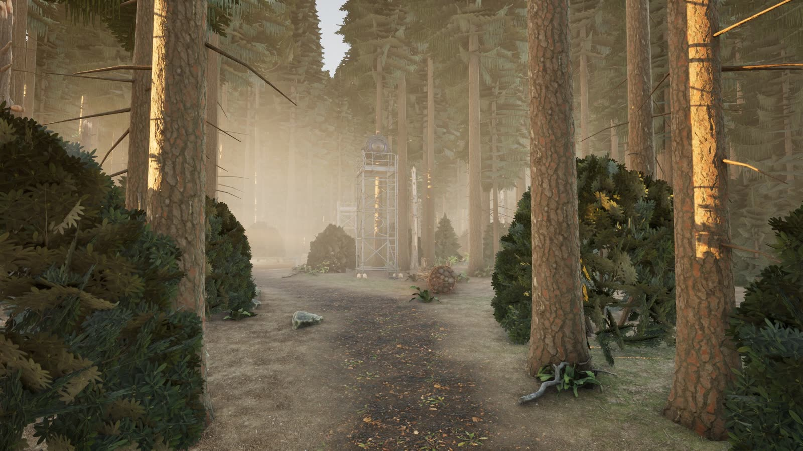
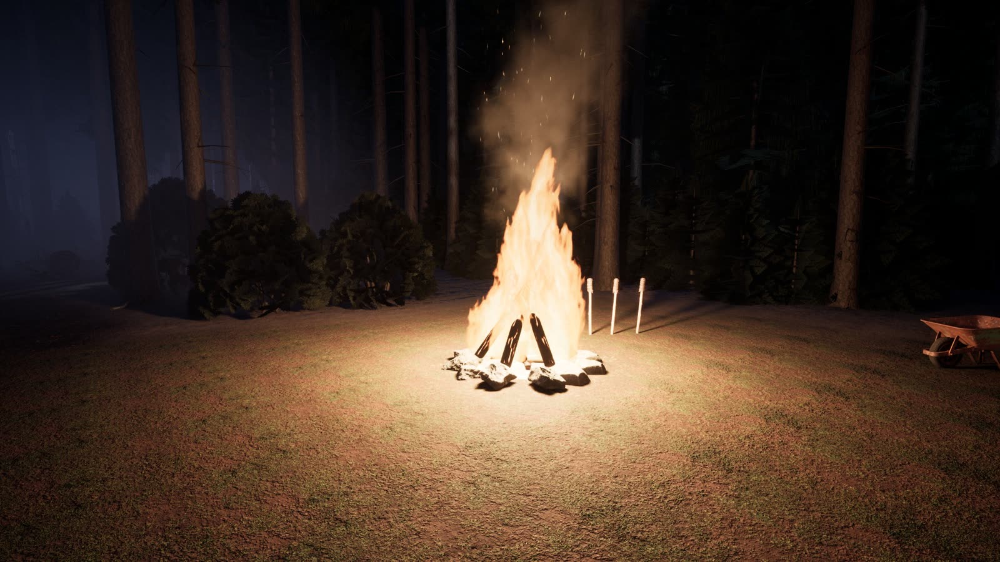
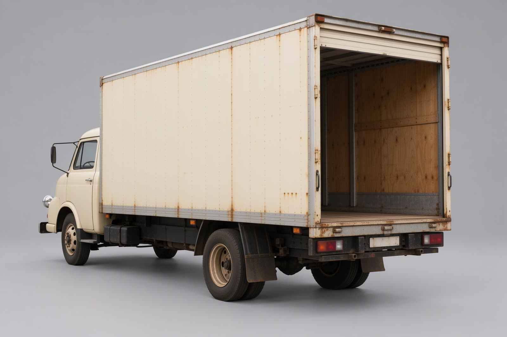
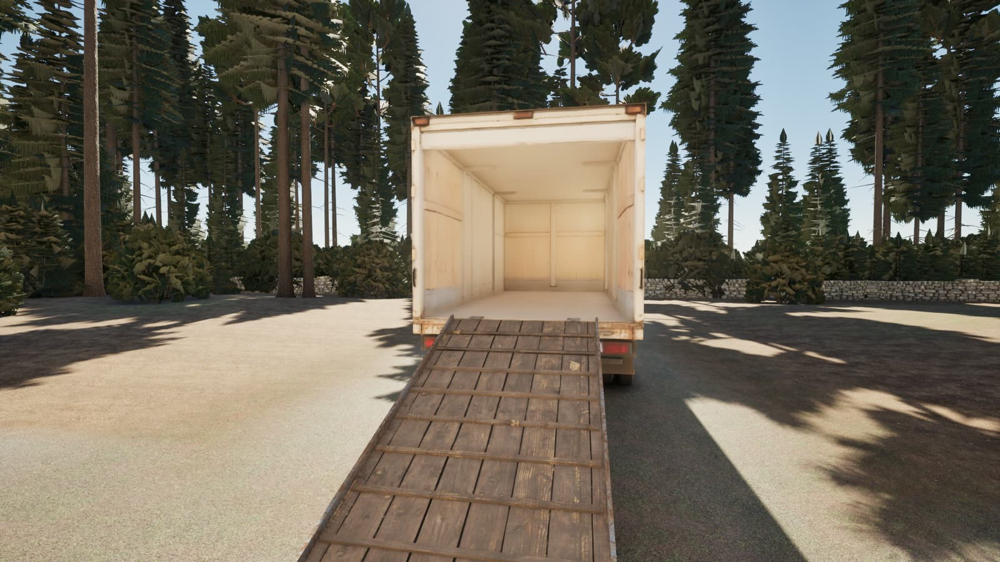
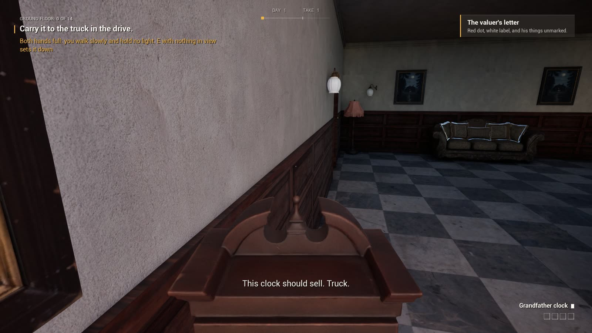
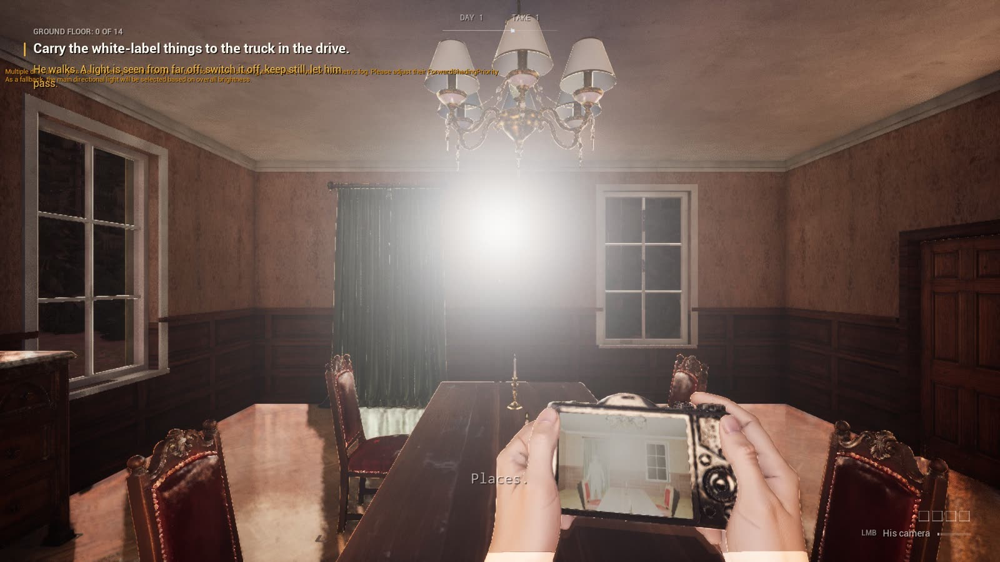

Day 1 Thursday 12 November
The game finds its shape: four days to empty a dead director's house
7 pictures 7 failures 7 min read
What changed, and why
He then described the game he had in mind, and it is a better one. Retold:
- A new owner moves into the mansion of a famous film director who died there long ago. The house is still full of the dead man's things.
- He clears it over several days. Every belonging is marked beforehand: most are burned on a bonfire in the backyard, the valuable ones are carried to a moving truck in the drive, to be sold.
- The fire needs wood, and the wood is in a small hut in a dense forest behind the house.
- The house has no light. The day runs into dark, and whatever light the owner carries also shows where he is. Putting it out and keeping still is how he gets away. Going to bed brings the daylight back.
- He is hunted after dark by the dead director, a frightening old man with a clapperboard in his hand. When the old man reaches him the clapperboard snaps shut: cut. The owner wakes in his bed and it begins again.
- The director's own things are worth the most, and carrying one makes everything worse.
- The house has four levels: basement, ground floor, top floor, attic.
- The owner talks to himself while he works, and that is how the player learns what a thing is for.
The thread
The agent's job was again to find the one line that ties it together, before any code: the house is his last film, and he allows no cuts. You are there to empty it.
The director's last film was taken from him and cut by other people. He spent his last years putting the house back exactly as it stands in that film, every chair on its tape mark. To him, whoever carries a thing out is cutting his picture.
That gives the theme something to do in play rather than in words. A valuer has tagged everything in the house: a red dot for the fire, a white label for the truck. The director's own things carry no tag. Each one is the player's to sell or to burn, and both have a price:
- Sold, it pays for batteries and lamp oil the next morning, but he walks earlier and searches longer.
- Burned, it pays nothing, but there is less of him left to walk.
The last thing in the house is the can holding his own cut of his last film. What the player does with it is the ending.
How the evening was run
Six agents worked at once in one copy of the project, each owning its own files: the house, the grounds, light and fire, the director, the game's rules, and sound. Before they started, the main agent wrote the story, the design, and a set of small agreed functions between the parts, so that each could build against the others without waiting.
Two things went wrong with the process itself.
Light: one number from morning to night
The sun, the sky, the mist, the moon and the exposure all follow a single number, from 0 (morning) to 1 (night). The game moves that number; every other part can set it to take a picture at a chosen hour.


The fire is our own too: moving noise on a few cards, sparks, smoke, charring logs and one flickering light. No ready-made effect was used.


It reads well from here. Close up the flame is flat and the stones bleach white; the yard's ground repeats in blotches. All three are on the list.
The grounds, and one model from start to finish
The drive, the yard, the forest and its path are built from a data file each time the map opens, the same way the house is. The moving truck shows how a model is made here. First a picture from the local image model:


PromptAn old removal truck of the 1970s, shown as a single object: a medium box truck about seven metres long with a rounded cab in faded cream…201 words
An old removal truck of the 1970s, shown as a single object: a medium box truck about seven metres long with a rounded cab in faded cream paint, round headlights, a chrome bumper with rust spots, a tall plain cargo box of riveted cream-painted sheet metal with rust streaks at the seams, a dark steel chassis, twin rear wheels with plain steel rims, mud flaps. The roller door at the rear is fully open and the cargo box is completely empty: inside it bare plywood walls and a worn wooden plank floor can be seen. Completely plain panels with nothing written or painted on them. Centred, the whole object in frame with clear space around it, three-quarter view from behind and from the left, slightly above, so that the open rear and the long left side are both seen, on a seamless plain mid-grey studio background, soft even diffuse studio lighting from all sides, no cast shadow on the background, no other objects, no people, photorealistic product photograph, sharp from front to back. No text, no letters, no numbers, no logos, no brand names, no maker's badges, no name plates, no number plates, no labels, no stickers, no stencils, no markings.
That picture went to Rodin, which returned a 3D model with the cargo box hollow, so the player can walk up the ramp and into it. The ramp is plain geometry of our own.


Two things on the grounds failed the first time.
The game itself
By script, the first day now plays from the director's far-off "Action" to bed: lifting and carrying, the truck, lighting and feeding the fire, fetching wood, the day's tally. Nobody has played it by hand yet. The guide in the corner names the next thing to do, and the owner mutters what he thinks of each thing as he lifts it.


The camera survives from the first build as what the developer meant it to be: a thing that takes flash pictures. Now and then the picture shows what the eye did not see.


Sound
Thirty-nine new effects were made with our own synthesis code (the clapperboard, the fire, footsteps on gravel and forest floor, a heartbeat), seven pieces of music with a local music model, and 135 spoken lines with a local voice model, including a newly designed voice for the owner. Every sound was judged from measurements and spectrograms, because the agent cannot hear. The developer listened to the ten that mattered most and passed them.
Next
A slice that looks finished, shown as pictures: the hall by day and at dusk, the drive, the yard with the fire burning, the forest path and a real hut, and the director in his final look. Then the first day played by hand.